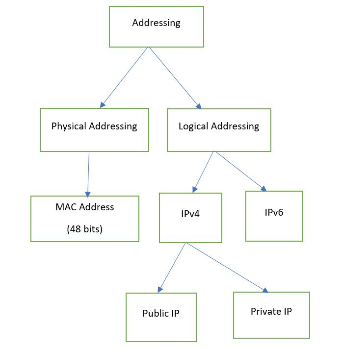

All about IPv4 Addressing
-> There are two types of addressing, Physical and Logical addressing.

IPv4
1. IP stands for Internet Protocol.
2. Some important things to remember about IPv4.
-> It is 32 bit logical address.
-> It has 4 octets.
-> The range of each octet is 0-255.
-> IP address = Network ID + Host ID
-> Network bit will get represented by 1 and Host bit will get represented by 0.
Format -> Octet1(8 bits).Octet2(8 bits).Octet3(8 bits).Octet4(8 bits)
Example -> 192.168.39.240
2. There are 5 classes in IPv4.
a) Class A -> 1.0.0.0 to 126.0.0.0
b) Class B -> 128.0.0.0 to 191.255.0.0
c) Class C -> 192.0.0.0 to 223.255.255.0
d) Class D -> 224 - 239
e) Class E -> 240 - 255
Note: Range 0(0.0.0.0) and 127 both belongs to class A theoretically, but we don't write it in the class A because we can't implement/allocate the IP address belongs to 0
or 127 range.
-> We generally use class A, class B and class C IP addresses.
-> Class A is generally used for large IP address range and Class C is used for small range.
-> Class D is reserved for multicast and class E is reserved for research.
-> IP address 127.0.0.0 is reserved for Loop Back address.
-> You should always check the first octet to find out the class of an IP address.
-> What is loopback address ?? (If NIC is not working in our computer).
How to find Network ID of IPv4?
1. First find out the class of an IP address.
2. Always remember, 1st octet is reserved for Network in class A, 1st and 2nd octets are reserved for Network in class B and 1st, 2nd, 3rd octets is reserved for Network in
class C as mentioned below.
Class A -> N.H.H.H
Class B -> N.N.H.H
Class C -> N.N.N.H
3. With the help of above classification of Network and Host ID, we can tell the Network ID of an IP address.
Example 1 -> Network ID of IP address 196.10.10.10 is 196.10.10.0
Example 2 -> Network ID of IP address 115.10.0.15 is 115.0.0.0
Example 3 -> Network ID of IP address 150.10.10.100 is 150.10.0.0
How to find Broadcast ID of IPv4?
1. First find out the class of an IP address.
2. Then, find the Network ID.
3. At the last put maximum octet value(255) on the Host ID octets.
Example -> Broadcast ID for 150.10.20.30 is 150.10.255.255
How to find the total number of hosts within Network?
1. First find out the class of an IP address.
2. On basis of class find the number of bits for the hosts. Class A has 24 bits host size, class B has 16 bits and class C has 8 bits size.
3. Now to findout total number of hosts in IP address, put 2 to the power number of bits.
Example -> Total number of hosts possible in IP address 150.10.20.30 is ( it belongs to class B so 16 bits of hosts i.e. 2^16 = 65,536).
How to find the total number of usable hosts/servers can be connected within Network?
1. First find out the the total number of hosts within IPv4.
2. Now, subtract two from the total number of hosts to find out the usable hosts.
Example -> Total number of hosts possible in IP address 150.10.20.30 is ( it belongs to class B so 16 bits of hosts i.e. 2^16 = 65,536).
usable hosts = 65,536 - 2 = 65,534
Note: Always subtract two from total number of hosts to find usable hosts within network. Because, first IP (150.10.0.0) represent Network ID and last IP (150.10.255.255)
represent Broadcast ID in the network.
How to find the Subnet mask of IPv4?
1. First find out the class of given IP address.
2. Then check how many octets are reserved for Network and Host on that class.
3. Always remember Network bit will get represented by 1 and Host bit will get represented by 0 and each octet has 8 bits.
4. So, fill the Network bit with 1(all the 8 bits) and Host bit by 0( all the 8 bits) on octets and calculate to find out the subnet mask of an IP address.
Example -> Subnet mask of 115.10.10.20 is 255.0.0.0
Subnet mask of 160.10.20.10 is 255.255.0.0
How to convert a numerical IP address binary IP address ?
1. We know there are 8 bits in one octet. Maximum value can be 255 and minimum value can be 0 (2^7{128} 2^6{64} 2^5{32} 2^4{16} 2^3{8} 2^2{4} 2^1{2} 2^0{1}).
2. Now calculate the value on basis bits.
Example -> change the IP address 192.168.37.200
128 64 32 16 8 4 2 1
1 1 0 0 0 0 0 0 -> 192
1 0 1 0 1 0 0 0 -> 168
0 0 1 0 0 1 0 1 -> 37
1 1 0 0 1 0 0 0 -> 200
Public and Private IPs
Public IPs - These IP addresses has to buy to use.
Private IPs. These IP addresses has not to buy to use. It is made of LAN systems. You cannot take it to internet or router. These are reserved for private network/lAN.
Ranges for Private IPs: Class A -> 10.0.0.0
Class B -> 172.16.X.X - 172.31.X.X
Class C -> 192.X.X.X
Q> Find the network ID, Broadcast ID, number of all IP and number of usable IP address of 11.200.200.200
Network ID => 11.0.0.0
Broadcast ID => 11.255.255.255
number of all hosts => 1,67,77,216
number of usable IP addresses => 1,67,77,214